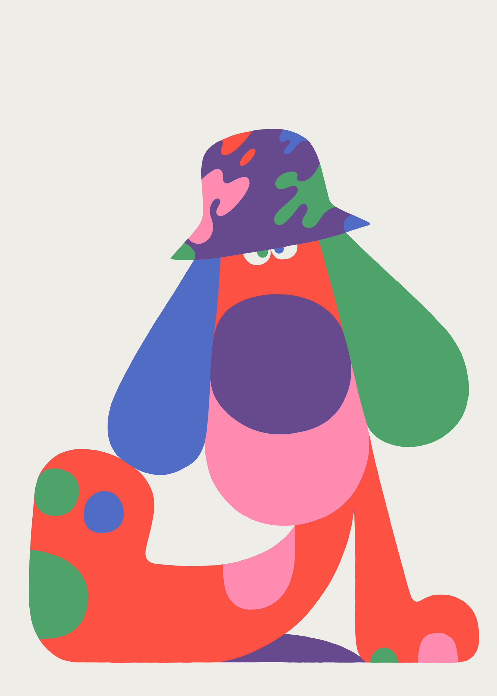
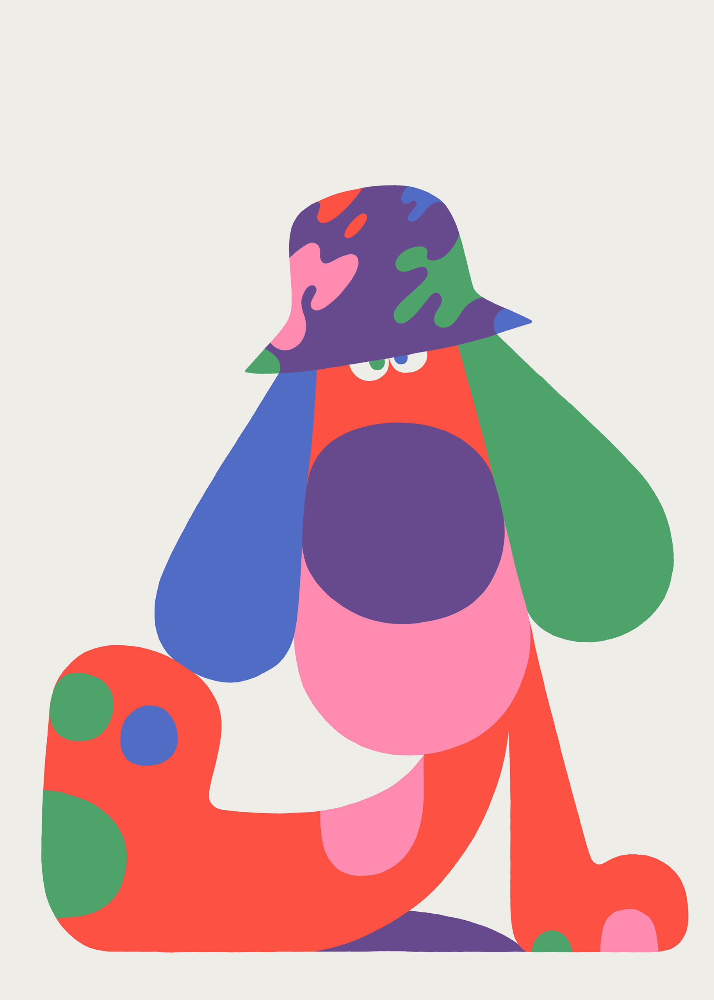

La mostra presenta una collezione curata di opere che esplorano l'ampio spettro dell'illustrazione, dalla narrazione visiva alla sperimentazione artistica, dall'uso di tecniche tradizionali come l'acquerello e l'inchiostro, fino alle più avanzate applicazioni digitali. Gli artisti selezionati provengono da vari angoli del globo, ciascuno con la propria voce unica, in grado di trasportare lo spettatore in universi paralleli, paesaggi onirici e scenari caricati di emotività e introspezione.
Visioni Illustrate non è solo un'esposizione, ma un dialogo aperto tra gli artisti e il pubblico, una celebrazione del potere dell'illustrazione di raccontare storie, evocare emozioni e stimolare riflessioni. Le opere in mostra spaziano da quelle che affrontano tematiche attuali e socialmente rilevanti, a rappresentazioni che indagano il confine tra il reale e l'immaginario, dimostrando come l'illustrazione possa essere un potente strumento di commento sociale e allo stesso tempo di pura evasione estetica.
Curata con l'intento di ispirare e coinvolgere, la mostra è un invito a scoprire le infinite possibilità espressive dell'illustrazione contemporanea, promuovendo un apprezzamento più profondo per questa forma d'arte sempre in evoluzione. Visioni Illustrate è quindi un must per appassionati d'arte, illustratori, designer e chiunque sia interessato a esplorare le nuove frontiere dell'espressione creativa.

 
